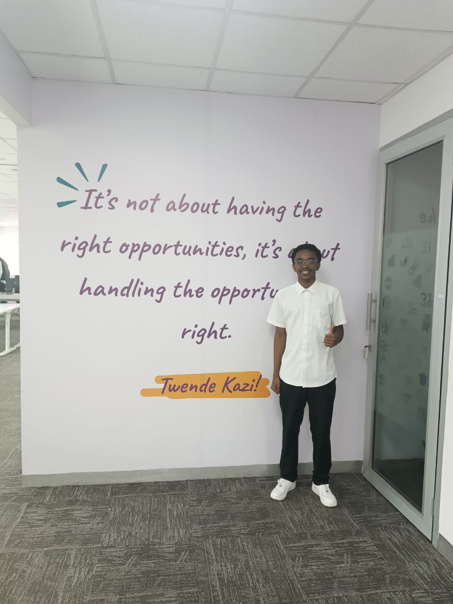

About Me
Chess Enthusiast & Developer
My Chess Journey
I've been passionate about chess since childhood, finding beauty in its strategic depth and endless possibilities. My journey in chess has taught me valuable lessons about patience, strategy, and continuous learning.
As a developer, I bring the same analytical mindset and strategic thinking to my coding projects. I believe that the principles of chess - planning, adaptation, and problem-solving - are directly applicable to software development.
Like most of the other chess enthusiasts who result to streaming i too, through this portfolio, aim to showcase how chess and technology can come together to create something unique and engaging.
My chess journey just like everyone else has been challenging with defeats to friends, family and to opponents on online platforms like chess.com. But that has never taken away my determination and desire to be a great chess player. Currently just over 1000elo but the journey never stops. The sky is the limit with the IM level very much achievable.

My Developer's Journey
My journey into web development traces back to 2022 when I enrolled at Maseno University to pursue a degree in Computer Science. Since then, I’ve had the opportunity to explore and learn various programming languages including HTML, CSS, JavaScript, PHP, and Python. I’ve also become familiar with popular frameworks such as Django and Laravel. This journey has been an incredibly rewarding experience, fueling my passion for technology and driving my curiosity about the emergence of Artificial Intelligence. My growing interest in this field has led me to delve into machine learning and its applications. Throughout this learning process, I’ve worked on several personal and group projects such as POSHPOINT, QUICKDROP, and many others, all of which are available on my GitHub account. The world of software development is dynamic, exciting, and full of opportunities. With the big dreams I carry and the drive to match them, I believe anything is possible. Twende Kazi!